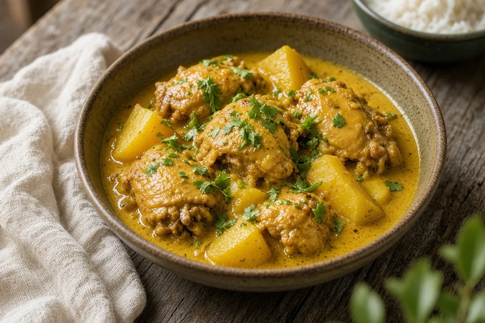

Jamaican Curry Chicken
Chicken thighs and Yukon gold potatoes simmered in a coconut milk curry with toasted curry powder, allspice, ginger, and jalapeño. Serve over rice with cilantro.

Adapted from wellplated.com
4 servings
By
Yield: 4 servings
Prep:
Cook:
Total:
Difficulty: Easy
Ingredients
- 1 1/4 lb boneless, skinless chicken thighs, cut into 1-inch pieces
- 1 tsp kosher salt
- 2 Tbsp olive oil
- 1 medium yellow onion, finely chopped
- 1 red bell pepper, very finely chopped
- 2 jalapeño peppers, very finely chopped
- 3 cloves garlic, minced
- 1 tsp minced fresh ginger
- 3 1/2 Tbsp curry powder
- 1 tsp turmeric
- 3/4 tsp allspice
- 1/4 tsp cayenne pepper, plus more to taste
- 2 medium Yukon gold potatoes, peeled and diced
- 1 (15-oz) can light coconut milk
- 1 Tbsp Worcestershire sauce
- 1 1/2 tsp white wine vinegar
- 1 tsp hot sauce, plus more to taste
- Chopped fresh cilantro, for serving
- Cooked rice, for serving
Instructions
- Sprinkle the chicken with the salt and set aside.
- Heat the olive oil in a large heavy pot over medium heat. Add the onion and cook, stirring now and then, until soft and translucent, about 5 minutes.
- Stir in the bell pepper, jalapeño peppers, garlic, and ginger and cook, stirring often, for 2 minutes.
- Add the curry powder, turmeric, allspice, and cayenne and stir constantly until the spices turn deep gold and fragrant, about 1 minute.
- Add the chicken and cook, stirring often, for 5 minutes, until golden outside.
- Add the potatoes and cook, stirring, for 3 minutes.
- Stir in the coconut milk, Worcestershire sauce, vinegar, and hot sauce and bring to a simmer. Lower the heat and simmer 20 minutes, stirring every few minutes, until the chicken and potatoes are tender and the sauce has reduced a little.
- Taste for salt and hot sauce, then serve over rice with plenty of cilantro.
Notes: AnyList showed this doubled; amounts are back at 1x. Full-fat coconut milk makes a richer sauce. Brown rice, quinoa, or cauliflower rice all work for serving.